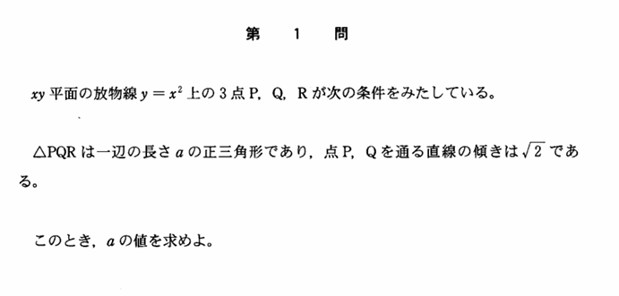

2004年 第1問
2次関数

分析
計算量がとても多く、解法選択を間違えると、さらに計算が多くなり、もはや解けなくなる。また、正三角形の条件をどのように使うか、どの条件を使ったかを整理することが問われる問題である。
例えば、辺の長さがaの正三角形の条件は以下のように何パターンもの処理の方法がある。
・2角が60度、 1辺の長さがa
・1角が60度、2辺の長さがa
・3辺の長さがa
・垂線の長さが$\ \frac{\sqrt{3}}{2}a$
・内心、外心、垂心、重心のうちどれか2つが一致する
・重心の点の座標の2変数と重心からの頂点の距離の1変数で表せる
上の3つの中では、辺の長さでの処理は次数が2次になってしまうことから、なるべく避けたいという考え方の下では、一番上の2角が60度と1辺の長さがaという処理の仕方が最も煩雑になることを避けることができる（場合によりはするが）。
上から2つ目の条件も、2辺の長さがaの二等辺三角形という部分の情報を、二等辺三角形の必要十分条件である、垂線の足が中点ということを使うといった工夫により大幅に計算量を削減することができることは多くある。
なお、3直線による正三角形ができる条件の処理は2026年理系第4問／文系第4問にも登場していて（これは長さの条件はない）、やはり3辺の長さが等しいという条件では2次式になり複雑になるので、2角が等しいという方法で処理をする必要がある。
このように、正三角形をなす条件を処理させる問題は、解法の自由度が高く、解法選択の思考力を問うことができる。
入試問題らしい難問と言えるだろう。2次関数による単純な問題設定だが、うまく思考をしないと時間内に解くことができないという所に、良問みを感じる。